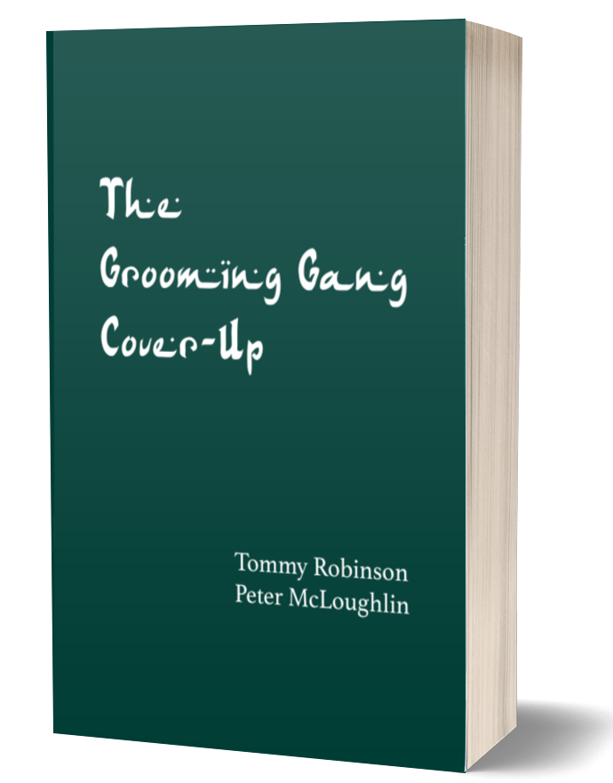
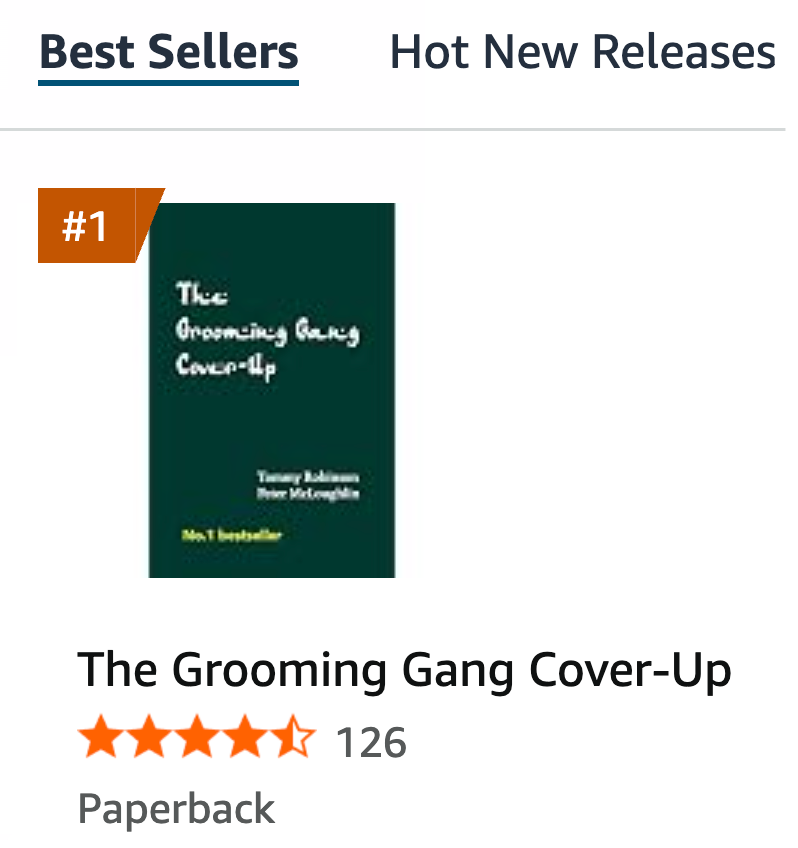

Now #1 Bestseller
The Grooming Gang Cover-Up
Tommy Robinson and Peter McLoughlin


Talking About My New Book https://t.co/XFVEhHDaZM
— Tommy Robinson 🇬🇧 (@TRobinsonNewEra) November 3, 2026
In Britain, from as early as 1916, police officers, social workers, teachers, doctors, academics, councillors and journalists repeatedly recorded this pattern (the historical evidence is cited throughout the book). For decades, the reaction of the Establishment was denial of the facts, dismissal of the scale of the criminality, and political suppression of those who spoke out. Intimidation and collusion by an army of state-funded employees ensured that the bigger picture could not be revealed. Reports were buried, investigations stalled, and parents who tried to protect their daughters were ignored, or even treated worse than the criminals.
When the existence of the gangs became impossible to ignore after 2011, the response of the Establishment was a refusal to recognise the pattern nationally and a refusal to recognise a culture of rape. From 2015 to 2025, as trials progressed across the country, the Establishment orchestrated a deliberate cover-up involving politicians, the judiciary and the media. The book lists dozens of towns across the country where, in the past twenty years, more than 500 men in these gangs have been jailed.
Drawing on court records, official inquiries, internal documents and contemporary reporting, this book argues the cover-up was not a series of isolated mistakes, but a sustained attempt by those in power to leave vulnerable girls as prey for predators. It argues that the Establishment knowingly imported and shielded the predators, and that this is why the public has been kept in the dark for so long. Essential reading for anyone seeking an objective account of the most serious child protection scandal in British history, it is unlikely there will ever be a more thorough account of this scandal and the cover-up.